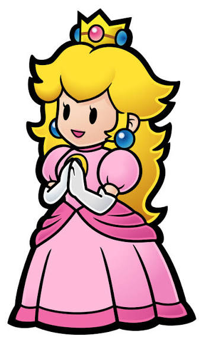

Mario

Mario es un fontanero valiente que vive numerosas aventuras. Salta obstáculos, recoge objetos y lucha contra Bowser para proteger a sus amigos.
Descubre el mundo de Mario y sus amigos.
Super Mario Bros. es una famosa saga de videojuegos de Nintendo. En sus aventuras, Mario recorre diferentes mundos, supera obstáculos, recoge monedas y se enfrenta a enemigos para salvar el Reino Champiñón.
A lo largo de sus aventuras cuenta con la ayuda de sus amigos, como Peach y Yoshi, y se enfrenta a su gran rival, Bowser.
Mario es un fontanero valiente que vive numerosas aventuras. Salta obstáculos, recoge objetos y lucha contra Bowser para proteger a sus amigos.

Peach es la princesa del Reino Champiñón y amiga de Mario. En muchos juegos necesita ayuda, aunque también protagoniza sus propias aventuras.

Yoshi es un dinosaurio amistoso que acompaña a Mario. Puede usar su larga lengua para comer enemigos y ayudar a superar diferentes obstáculos.

Bowser es el rey de los Koopas y el principal antagonista de la saga. A menudo intenta conquistar el Reino Champiñón y secuestrar a Peach.